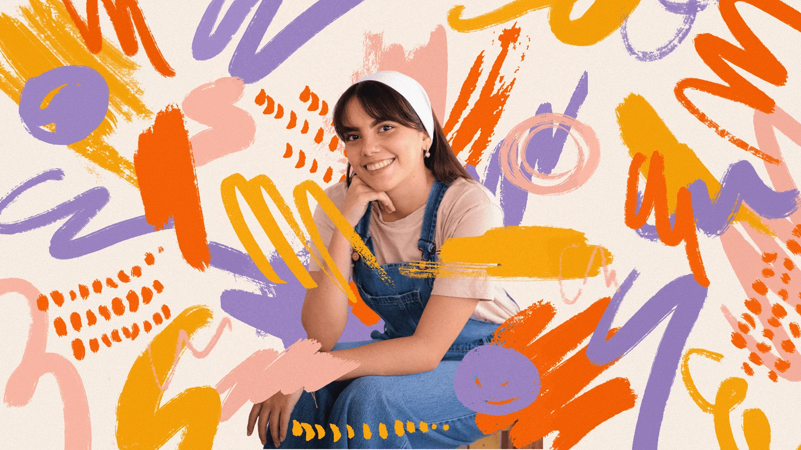
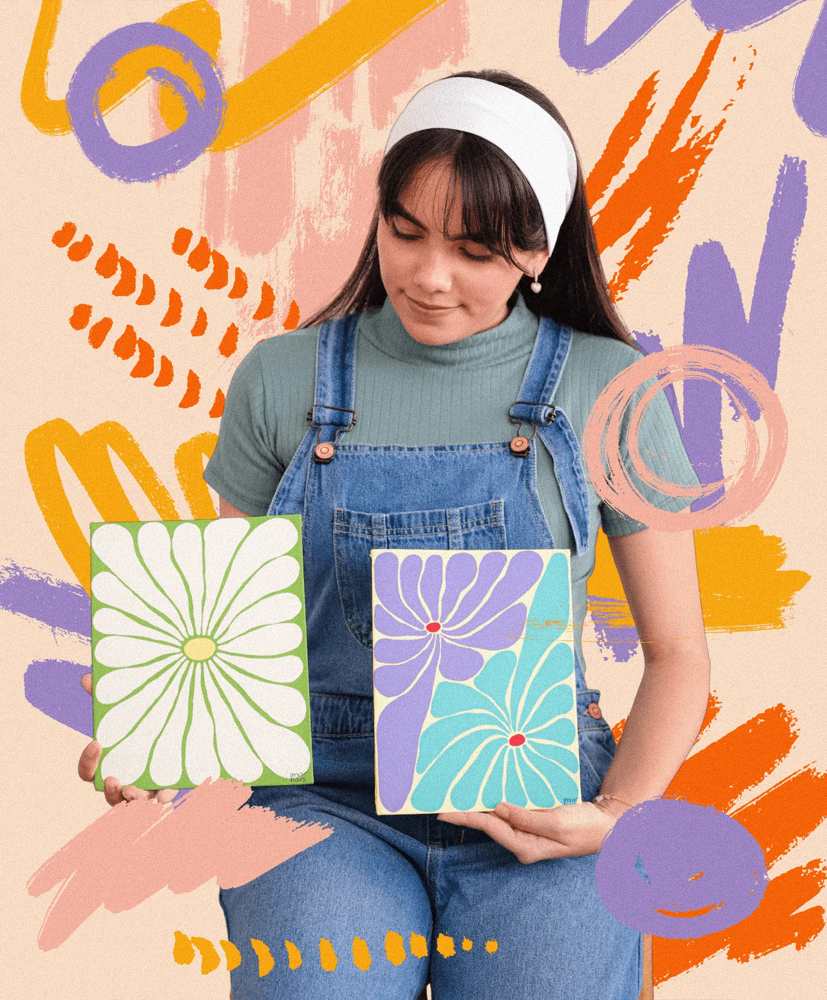
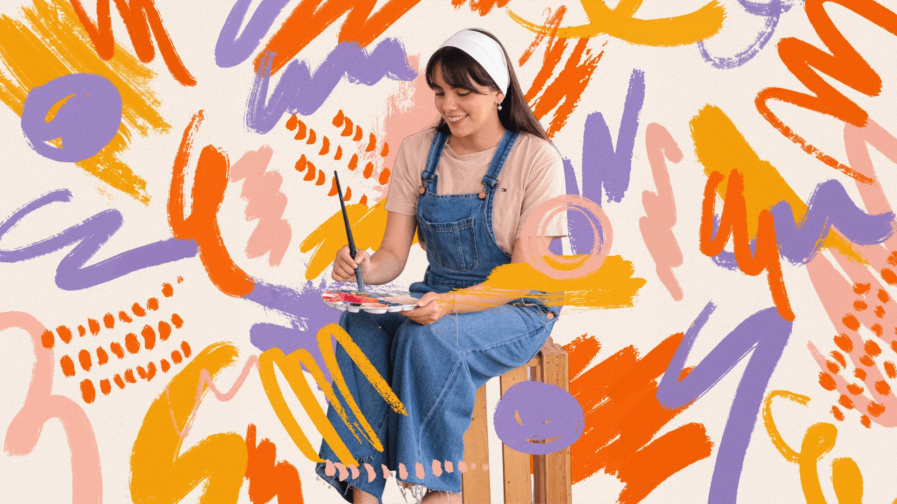
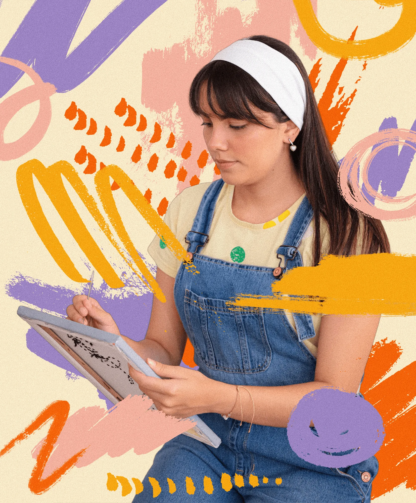
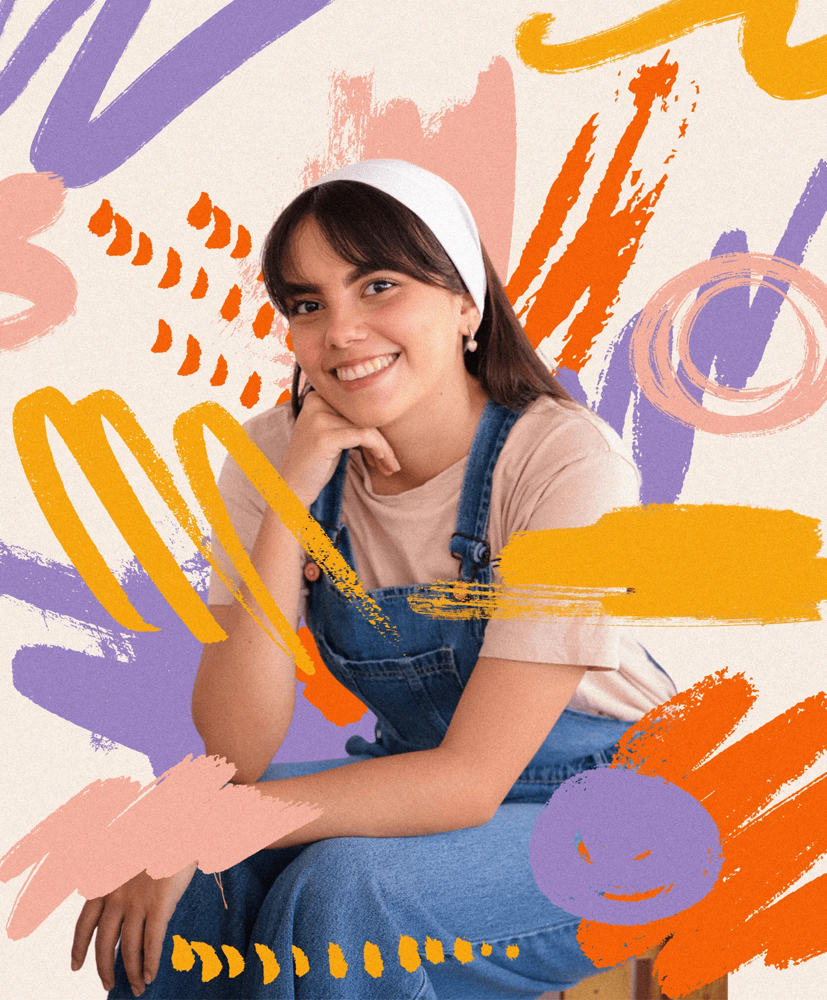

Project Overview
Client: Personal Project – Intervened Artworks
Industry: Art, Visual Exploration
Timeline: 2024
My Role: Artist & Visual Designer




This personal project explores the intersection between photography and illustration through digital interventions. By layering strokes, textures, and expressive color palettes, I transformed everyday images into unique visual narratives that highlight identity, creativity, and emotional connection.

Client: Personal Project – Intervened Artworks
Industry: Art, Visual Exploration
Timeline: 2024
My Role: Artist & Visual Designer





I'd love to connect with you!